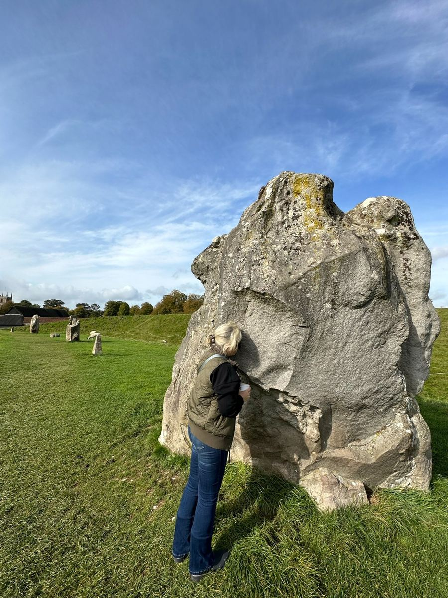
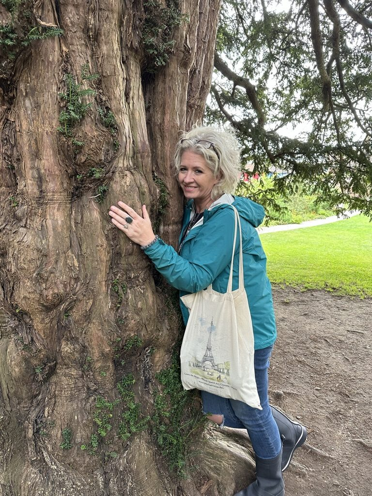

writer · oracle · mirror
Bentonville, Arkansas · Available worldwide
Working at the crossroads of writing, lineage, and the kind of transformation that doesn't announce itself — it simply arrives, gate by gate, until something essential has been stripped and something truer remains.

Christy Paxton Wade is a violinist, writer, and mentor who has spent her life at the crossroads of music, family, and the kind of transformation that doesn't announce itself — it simply arrives, gate by gate, until something essential has been stripped and something truer remains.
She has taught young musicians, raised a family, and built a practice around the quiet turning points where people either compress themselves to fit inherited expectations or descend, deliberately, into their own sovereign frequency.
Her work lives at the intersection of astrology, ancestral cartography, and the ancient feminine wisdom that has always known: growth begins below the noise. She built the Navigation Map of Consciousness — thirteen Fields of human experience mapped across three arcs — as the structural spine for everything she teaches. She lives in Arkansas, where music, gardens, family, and lifelong learning continue to shape her voice and her work.
If something in you recognized those words, you're already in the right place.
The call will come dressed in the face of whoever is waiting for your coherence. Answer it from below the noise.

The work has many doorways. The map, the readings, the writing, the mentorship — each one assumes the others.